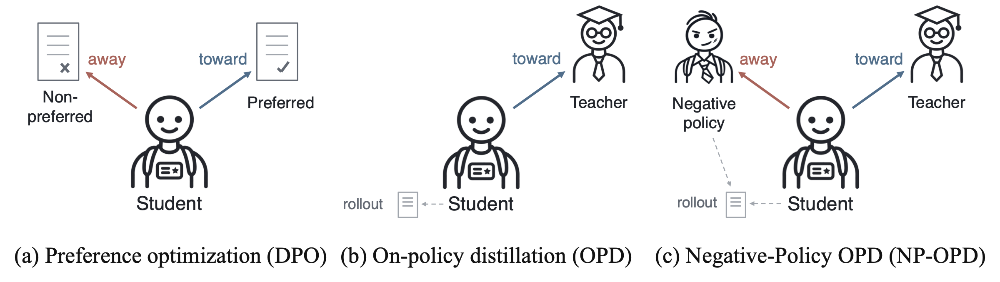

TL;DRNP-OPD trains on rollouts from a lower-capability negative policy using the original distillation reward. These rollouts keep tokens preferred by the negative policy over the teacher exposed to supervision throughout training, improving OPD across model scales, generation modes, reasoning domains, and reward variants.
OPD trains on student-generated trajectories with token-level supervision from a stronger teacher. NP-OPD introduces a lower-capability negative policy as an additional rollout source and a negative reference for the student. This changes the rollout distribution while preserving token-level teacher–student supervision.

For each prompt, sample a rollout from the student or a frozen, lower-capability negative policy πn from the same model family. Apply the original distillation reward to either source.
NP-OPD applies to OPD, ExOPD, and OPD² without changing their reward formulations.
As training suppresses tokens preferred by the negative policy over the teacher, the student samples them less often. Negative-policy rollouts keep these tokens exposed to teacher supervision.
Toy example. The wrong answer “3” has probability 2% under the student and 50% under the negative policy; an equal mixture gives 26%. Icons illustrate sampled rollouts; ✗ marks suppressive updates.
Under the OPD reward, Rt = log π*(yt) − log πθ(yt), “3” is suppressed because the teacher assigns it lower probability than the student. Negative-policy rollouts expose it to more updates, while teacher-preferred tokens can still be reinforced.
Toy example. Repeatedly sampling “3” sustains suppressive updates under the same OPD reward. The training curves are schematic.
Qwen3-1.7B, 4B and 8B students in thinking and non-thinking modes, evaluated on 13 Math, Code and Science benchmarks. The negative policy is the next smaller Qwen3 model.
NP-OPD improves overall accuracy with OPD, ExOPD, and OPD² while preserving each method's reward formulation.
| Math | Code | Science | All (13) | |||||||||
|---|---|---|---|---|---|---|---|---|---|---|---|---|
| Reward | on-policy | NP-OPD | Δ | on-policy | NP-OPD | Δ | on-policy | NP-OPD | Δ | on-policy | NP-OPD | Δ |
| Qwen3-1.7B | ||||||||||||
| OPD | 60.0 | 61.8 | +1.83 | 34.3 | 37.6 | +3.24 | 40.9 | 41.9 | +1.06 | 49.7 | 51.6 | +1.98 |
| ExOPD | 63.1 | 63.4 | +0.27 | 38.2 | 39.0 | +0.77 | 43.4 | 43.2 | −0.12 | 52.8 | 53.1 | +0.30 |
| OPD² | 64.3 | 65.3 | +1.00 | 38.5 | 43.0 | +4.48 | 44.2 | 45.0 | +0.83 | 53.7 | 55.5 | +1.76 |
| Qwen3-4B | ||||||||||||
| OPD | 70.7 | 72.2 | +1.51 | 52.9 | 53.4 | +0.49 | 49.8 | 50.6 | +0.80 | 61.7 | 62.9 | +1.11 |
| ExOPD | 72.8 | 76.0 | +3.20 | 58.7 | 57.6 | −1.10 | 51.5 | 53.2 | +1.70 | 64.6 | 66.5 | +1.86 |
| OPD² | 74.0 | 76.8 | +2.85 | 58.4 | 60.6 | +2.17 | 52.3 | 52.6 | +0.28 | 65.4 | 67.5 | +2.10 |
Thinking mode. All (13) averages all benchmarks; on-policy uses student rollouts only. Δ is the gain in percentage points, computed before rounding.
NP-OPD also improves OPD on Gemma-4-E4B, with the largest gain in Math (63.0 → 66.4). Reusing pre-generated negative-policy rollouts reduces Qwen3-1.7B training time from 9h19m to 3h34m in thinking mode on eight H100 GPUs, excluding rollout pre-generation.
We use a Qwen3-1.7B student and Qwen3-8B teacher in thinking mode, with Qwen3-0.6B fixed as the negative reference. We compare on-policy OPD with training on rollouts from each frozen model (0.6B, 1.7B, 4B, or 8B).
NSP (negative-policy suppression precision) is the fraction of suppressed tokens preferred by the negative policy over the teacher, evaluated among positions with the largest absolute log-probability changes in each trajectory.
At positions where their top predictions differ, NOR (negative-policy overlap reduction) measures how much training shifts the student's probability gap toward the teacher's choice relative to the negative policy's.
On-policy distillation (OPD) has been widely studied as a post-training method in which a student model obtains token-level supervision from a stronger teacher on its own rollouts. Recent studies have improved OPD through alternative distillation reward formulations and teacher configurations, while the objective of distillation remains centered on mimicking the teacher. However, when a stronger teacher has limited distributional overlap with the student, such positive guidance can provide insufficient learning signals.
In this work, we introduce Negative-Policy OPD (NP-OPD), which complements teacher supervision with rollouts from a lower-performing, lower-capability negative policy that serves as a negative reference for the student. Rather than modifying the distillation reward formulation, NP-OPD introduces the negative policy at the rollout stage, continuously supplying tokens preferred by the negative policy over the teacher so that they remain exposed to teacher supervision throughout training. This provides an explicit negative signal through negative-policy rollouts while preserving the positive teacher supervision used in OPD.
Through extensive experiments, we show that NP-OPD improves OPD across model scales, generation modes, reasoning domains, and different OPD variants. Furthermore, our analyses show that NP-OPD effectively suppresses tokens preferred by the negative policy over the teacher and moves the student away from the negative policy. These results support our design of introducing negative signals through negative-policy rollouts and provide new insight into the role of the rollout policy in OPD.
@article{hwang2026npopd,
title = {On-Policy Distillation with Negative-Policy Rollouts},
author = {Hwang, Jaehui and Han, Dongyoon and Yun, Sangdoo and Heo, Byeongho},
journal = {arXiv preprint arXiv:2610.07874},
year = {2026}
}